M'n opa en oma waren in november niet langer meer onbekenden voor jou.
ze waren apetrots dat ik een vriendin had en wat voor één!
Ik hoor nog steeds de woorden van opa: 'Amai, hoe heb jij da gedaan?!'
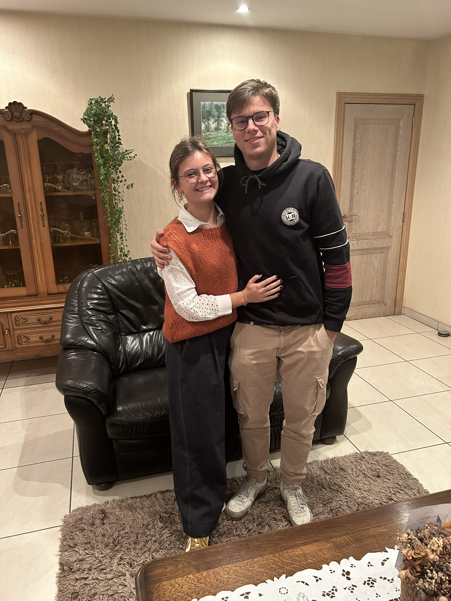
We maakten een weekendje naar Brugge als cadeau voor m'n verjaardag.
Dit was ons eerste weekendje weg samen! Een mooie kamer waar we het heel gezellig hebben gehad!
Het weekend begon goed met ribbetjes zoveel je kon!
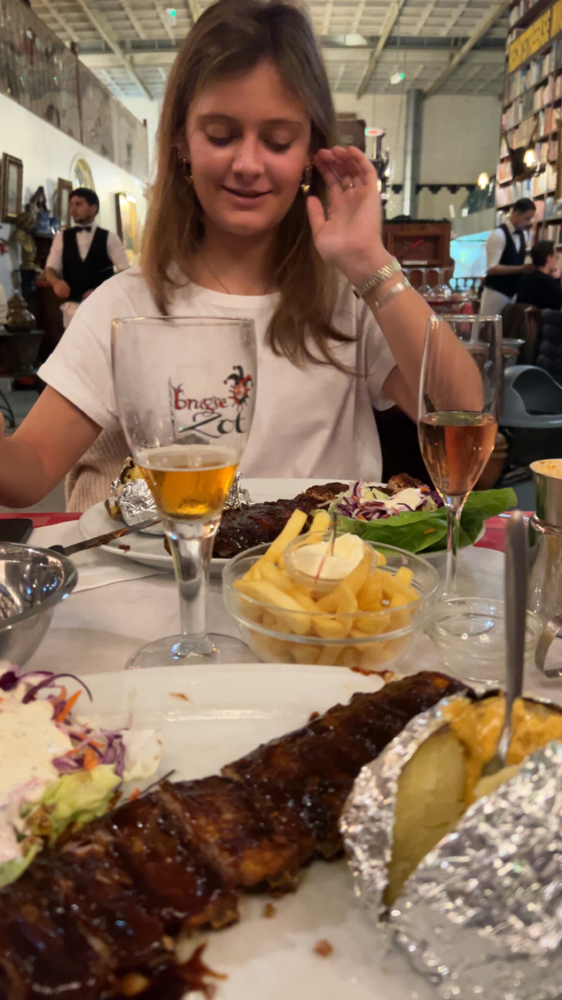
We maakten vele mooie wandelingen, zochten de mooie plekjes op, aten verse garnaalkroketten
en genoten van elkaar
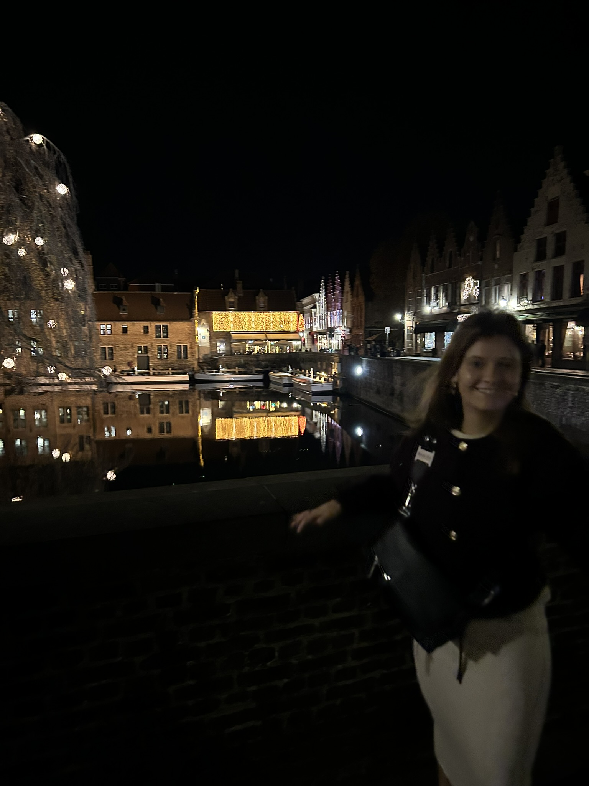
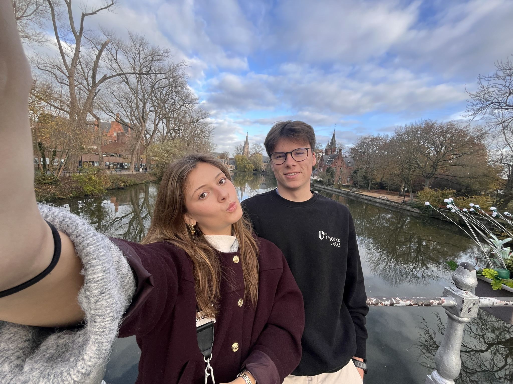
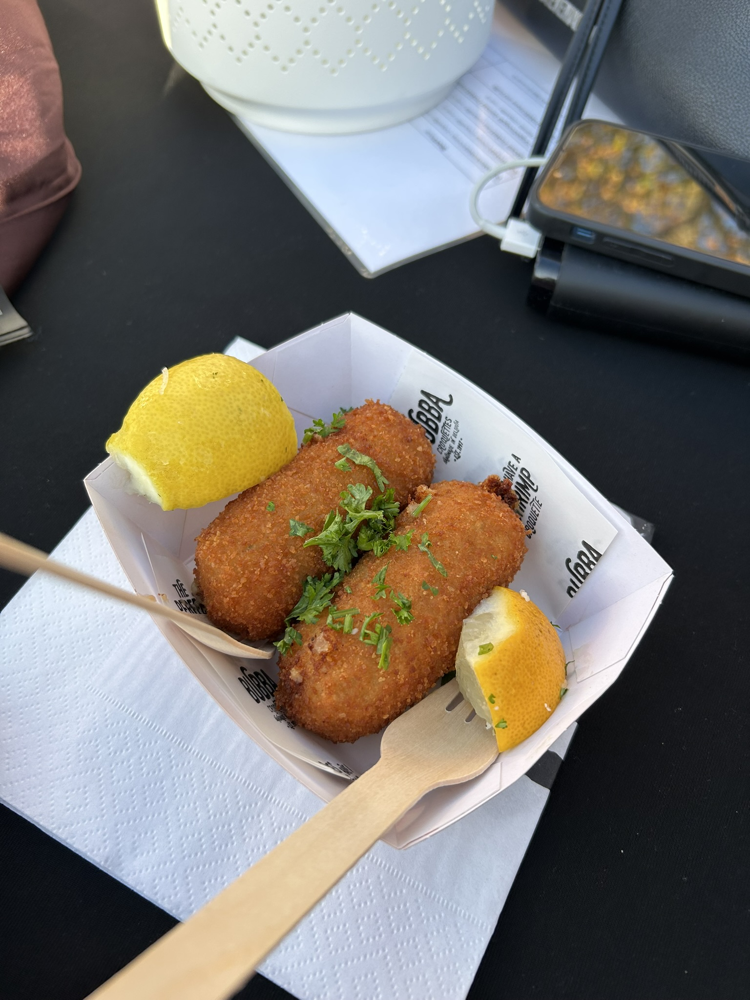
We volgden een cursus pannekoeken bakken, in combinatie met bier.
Een workshop vol met hollanders haha
Dit was een zeer toffe activiteit, waar we veel gelachen, gesmuld en gedronken hebben!
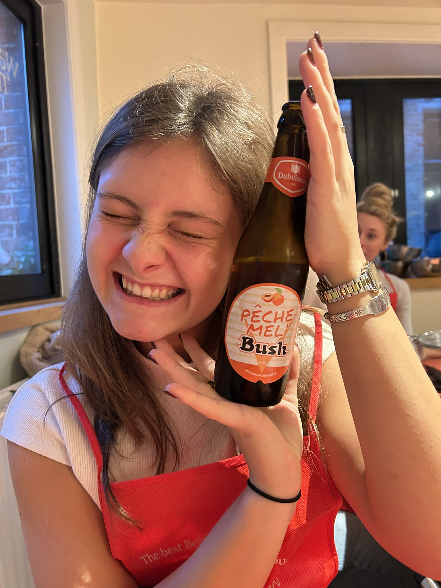
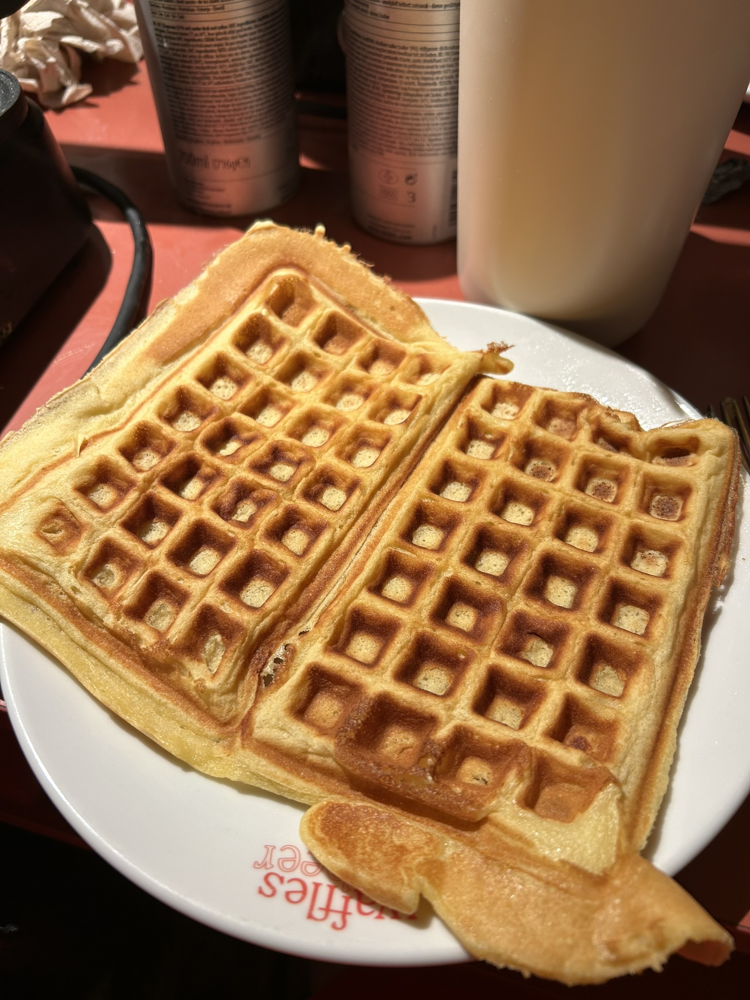
Deze toffe dag werd afgesloten met een perfecte Mr. Spaghetti! Een dag vol eten, lachen en plezier!
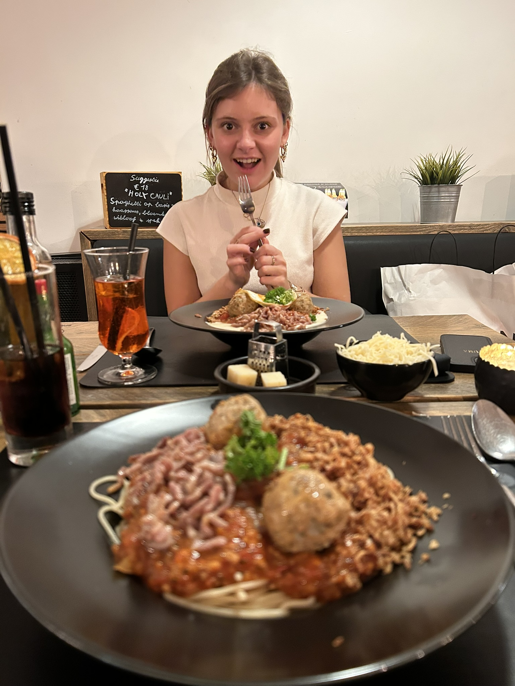
De laatste dag van het weekend maakten we opnieuw een wandeling, bezochten we de biermuur & het belfort en maakten
we een boottochtje! WAT EEN WEEKEND!
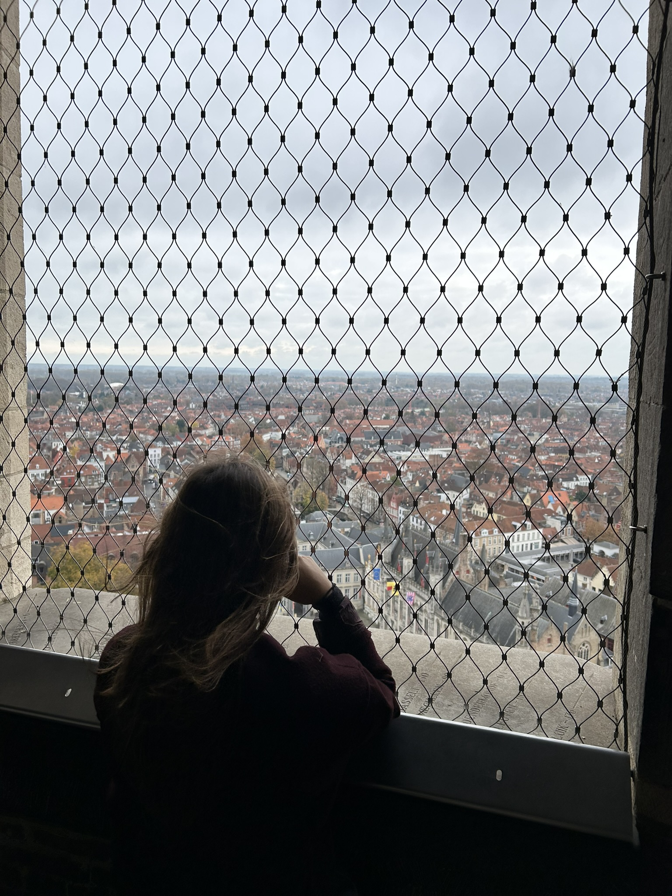
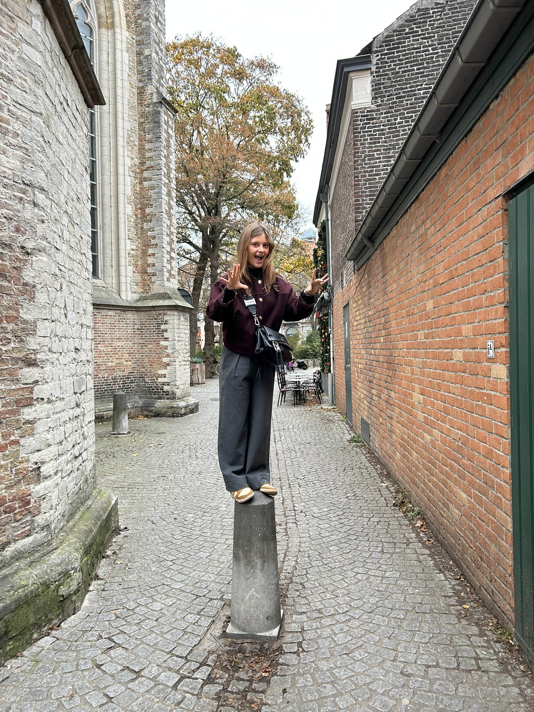
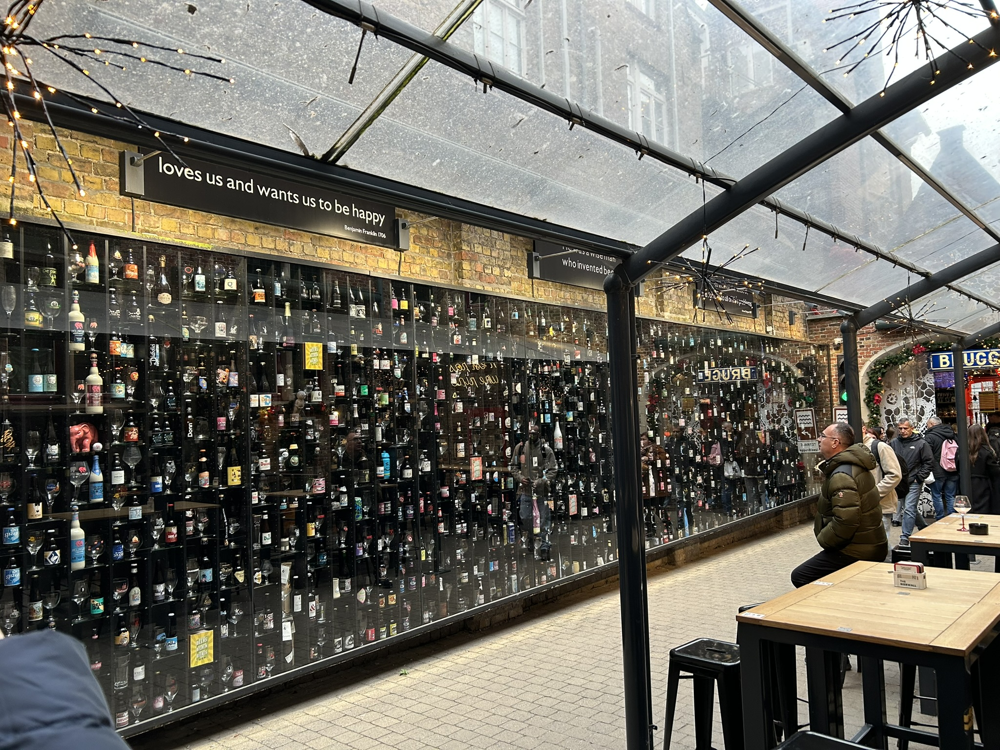
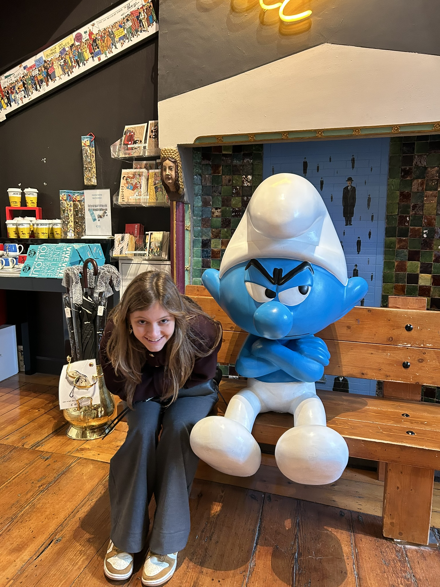
Tijdens de koude maand ging we zelf wandelingen maken aan de zee!
Dit zijn de avonden waar ik het meest naar uit keek, samen met jouw er een
mooi moment van maken!